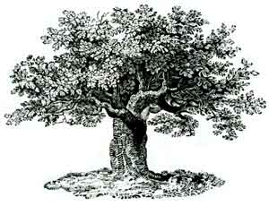
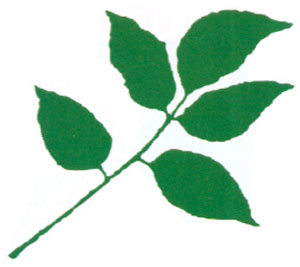
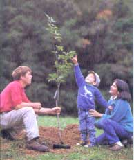

The more we plant, the better off this planet will be. No doubt about it.
"It is not merely that the world is bettered by savings, replacing, and multiplying trees. It is that an aim of this kind becomes an impulse towards developing a mood and an outlook which will increasingly make it natural to think for the future, for other people, for generations yet unborn. Planting a tree is a symbol of a locking-forward kind of action; looking forward, yet not too distantly."
-Richard St. Barbe Baker
Mars and Venus have no trees. Earth does. But it needs more.
IMAGINEa man who for 92 years walked the earth, often broke but never lost, inspiring others to plant trees. Who organized 3,000 Kenyan warriors into a new secret society, Men of the Trees. Who started reforestation projects in Nigeria, India, New Zealand, Palestine. Who went to court to save the California redwoods-twice, at 30-year intervals. Who organized the Green Front, an international effort to stop the advancing Sahara desert with a great wall of trees. Whose inspiration and guidance were, by one estimate, responsible for the planting of over 1 trillion trees.
For Richard St. Barbe Baker (1889-1982), a healer of the earth, trees of every kind became his extended family.
Inspired by childhood experiences of bonding with trees, this British idealist trained to be a professional forester. When the bureaucratic nature of his occupation frustrated him, he struck out on his own. Baker spent the rest of his life traveling the globe organizing planting projects and, in speeches and books, raising public awareness of the need for more trees.
Today, we are all called upon to walk in Baker's footsteps. One goal of Earth Day 1990 is to have every one of us plant at least one tree. That's a good goal to start with. Some are already going further. Scientist James Lovelock, who originated the Gaia the-ory that the earth operates like a living organism, has, with his family, planted 20,000 trees. All of us concerned about the earth could consider, like Lovelock and Baker, putting our spades where our worries are.
Why? Since trees absorb carbon dioxide and give off oxygen, they are essential for combating the global warming effect being created by excess carbon dioxide generation. Since they retain water in the soil and transpire moisture into the air, they are-in part-responsible for the ongoing existence of many springs, the even flow of rivers, and the formation of rain clouds. Since their innumerable roots hold soil in place and their bodies block wind, they are the best of all means for stopping erosion. Indeed, since they continually pull nutrients from the subsoils and drop organic matter to the earth, they are unparalleled soil builders as well.
But that isn't all. Consider that:
A single mature tree absorbs around 13 pounds of carbon dioxide a year, while a younger, actively growing tree may absorb up to 26 pounds of CO 2 , per year-approximately five tons per acre of trees.
Whether as a family project or an individual one, the point is to plant!
About half of the weight of any tree is carbon. To maximize the amount of carbon dioxide absorbed, trees should be planted that gain weight the fastest. Depending on the trees' densities, these may or may not be the same ones that gain diameter the fastest. Some common trees that "bulk up" quickly (in various parts of the country) include river birch, sycamore, tulip poplar, willow oak, red maple (commercial varieties), green ash, and black gum. In the South, try lobolly pine; in the West, Douglas fir; and in the Deep South and the tropics, leucaena. If in doubt, plant any native species that generally do well locally.
Reducing atmospheric CO 2 , through tree planting costs about 0.3 cents to 1.3 cents per pound. Doing the same thing, by improving the energy efficiency of appliances costs about 2.5 cents for each pound of CO 2 ; and by improving electrical supply efficiency, about 10 cents per pound. While tree planting can make a significant contribution to reducing CO 2 buildup, it won't solve the problem, not unless we all turn into Johnny Appleseeds. For it to do so, we would have to replant all the planet's deforested areas-or double the growth rate of existing forests-to compensate for humanity's excess carbon dioxide production. It's been estimated that a typical family of four would need to plant six acres of trees to offset its CO 2 generation.
In many locations, the cooling effects of trees can be more important than their ability to absorb carbon. Using landscape trees to shade buildings (and thus decrease the need for air-conditioning) results in CO 2 , emission reductions that are 15 times as great as the amount of the trees alone can absorb. Indeed, shade trees on the south and west sides of a house can lower its air-conditioning bills by up to half.
Cities are particularly important locales for new tree-planting efforts. All that concrete and asphalt creates a "heat island" that makes cities 5° to 9° warmer than surrounding areas, so the cooling effects of trees can be especially helpful. The American Forestry Association estimates that there are 100 million tree-planting sites available. Planting them all would reduce carbon dioxide emissions from energy production by about 18 million tons per year and save consumers $4 billion each year in energy costs.
All well and good. However, planting a tree is not quite as simple as it may sound. Without proper technique and care, a transplanted tree will die.
Select a tree that's appropriate for the site. Is the soil heavy, sandy, wet, dry, acidic, alkaline? Is the spot sunny, shady, windy, cold? Choose a tree that will prosper under the local conditions. Also, pick a healthy tree: no broken branches or scraped bark, and plenty of roots (with healthy, white tips). Keep its roots moist and plant it as soon as possible.
Dig the hole a few inches wider than the roots spread. If the soil is loamy and well drained, make the hole a few inches deeper than the root ball. If it's heavy and clayey, make the hole a few inches shallower than the root ball and cover the top roots with soil and mulch. This will raise the plant out of the hole some to avoid poor drainage. In either case, don't add compost or fertilizers, which may discourage the roots from moving out of the hole.
Poke the sides of the planting hole with a garden fork to loosen the surrounding earth. Use the fork also to break up any large clods in the backfill earth.
Set the tree so the soil-level mark on the trunk is even with the top of the planting hole (unless the soil is so heavy you need to raise the plant a bit out of the hole). You can eyeball this by laying your fork across the hole. Remove any covering that the tree came in (otherwise it may die from constricted roots) and prune off any bad roots.
Spread the roots, backfill the hole halfway, and water the soil. Watering helps eliminate air pockets by packing the soil around the roots.
Complete the backfilling and create a low ridge around the hole to help hold in water. Spread peat moss, pine bark, compost, or other organic mulch around the tree (but not touching the trunk) to retain as much moisture as possible and to suppress weeds.
Water the tree thoroughly now-and during dry weather for the first year. Until a tree's roots have spread well out into its new home, it is very vulnerable to water stress. If you plant it and forget it, it may die during a summer dry spell. So throughout that first year, nurse the tree when necessary. It should return the favor by growing healthy and strong for decades.
The bottom line is that each of us has the opportunity to help renew the planet-by planting trees.
However, not everyone will have the space, time, or opportunity to plant first-hand. In this case, you have some options, including making a contribution to organizations who will plant trees in different parts of the world on your behalf. Among them is Global ReLeaf, American Forestry Association, P.O. Box 2000, Washington, DC 20013. Global ReLeaf is a national campaign of the American Forestry Association aimed at expanding both urban and rural tree-planting efforts, reducing deforestation and dependence on fossil fuels, and enacting legislation to support these efforts.
Trees for the Future, 11306 Estona Dr., P.O. Box 1786, Silver Spring, MD 20915, is another option. The "Peace Corps of Trees," this donation-financed group has what is probably the most effective global reforestation program. TF is operating 2,000 village projects around the world, planting more than 10 million trees (in some areas, at a cost of a cent and a half per tree!). A $30 donation will provide enough funding for an entire village's seeds.
Also, there is the Rainforest Action Network, 300 Broadway, Suite 28, San Francisco, CA 94133. This group mans the front line in the war against deforestation. RAN organizes lobbying campaigns and, when necessary, nonviolent blockades to save important rain forests, from Malaysia to Hawaii (where the last lowland tropical rain forest in the U.S. is now being opened up). A $15 (or greater) donation brings you their quarterly World Rainforest Report and periodic "Action Alerts."
Last, if you'd appreciate the inspiration and knowledge that come from learning more about Richard St. Barbe Baker, send $14 to Bountiful Gardens, 19550 Ridgewood Rd., Willits, CA 95490, for their recently published collection of his selected writings, Man of the Trees.
|
WILLIAM WALDRON |
 |
 |
|
 |
|
|